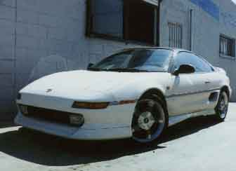

TOYSPORT PERFORMANCE UPGRADE Stage 1 - Ultraflow Muffler with 2.25" Piping Exhaust System Stage 2 - K & N Oval Cone with Adapter Stage 3 - Bored Out Throttle Body HKS PERFORMANCE UPGRADE Stage 1 - Exhaust System Stage 2 - Power Flow Air Filter Stage 3 - Twin Power Ignition SUSPENSION Tokico Illumina 5 way Adjustable, Set Tokico Sport Springs, .75" drop Eibach Progressive Springs, .75 drop H & R Sport Springs, 1.5" drop Cusco Camber Kit Cusco Strut Tower Bar, Front GAB Strut Tower Brace, Front GAB Strut Tower Brace, Rear GAB Lower Arm Brace, Front DRIVETRAIN Centerforce I Centerforce Dual Friction BRAKE COMPONENT Steel Braided Brake Hose, set Repco Metal Masters Brake Pads, set Cross-drilled Brake Rotors, pair AERODYNAMIC BODY KIT Aeroware 7pc. Full Body Kit Bomex Front Bumper Spoiler* Bomex Chin Spoiler Bomex Side Skirt Bomex Rear Valance Tom's Air Scoop * need to modify the bumper support.
For any inquiries, please call 213-755-1177 or email us.